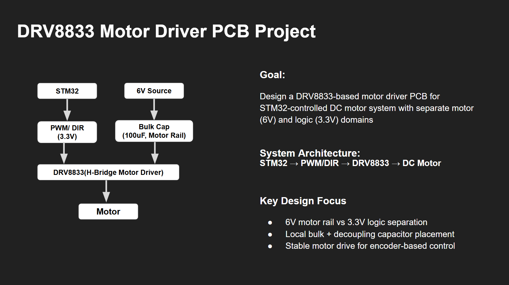
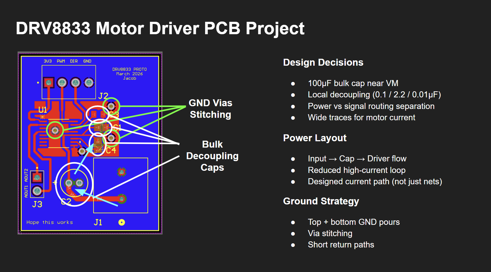
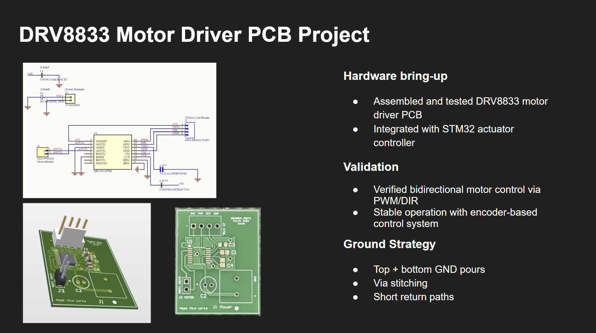

Goal
Design a DRV8833-based motor driver PCB for a DC motor system controlled by STM32, with a 6V motor rail and a separate 3.3V logic domain.
Project Detail
A custom motor driver PCB designed around the DRV8833 for an STM32-controlled actuator system, with separate motor and logic domains and layout decisions focused on stable embedded motor control.
Design a DRV8833-based motor driver PCB for a DC motor system controlled by STM32, with a 6V motor rail and a separate 3.3V logic domain.
This board was designed to support a motor control system driven by an STM32 actuator controller. The main challenge was building a compact PCB that could handle the motor power path cleanly while keeping the logic side stable and noise-aware.
The design separated the 6V motor rail from the 3.3V logic signals and emphasized capacitor placement, routing strategy, and solid ground return paths to support reliable bidirectional motor operation.



Rather than treating the PCB as only a net connection problem, the layout was planned around current flow and return paths. That meant thinking about where current entered, how it moved through the driver, and how the ground returned under realistic motor load.